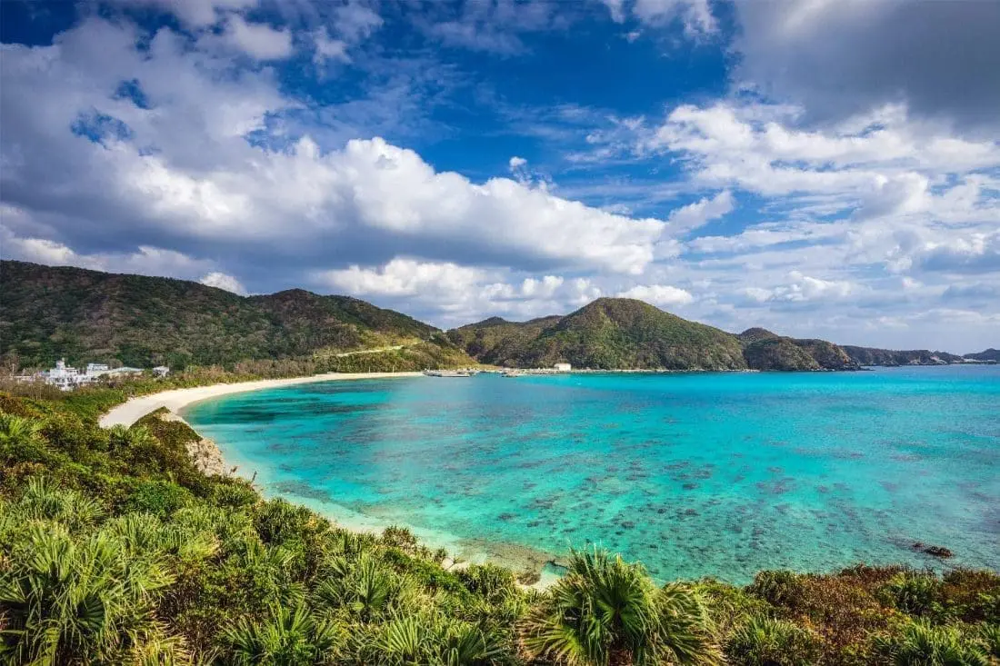

Nos conseils pour un bon séjour !
Japon, Espagne, Maroc
Villes du Japon
Tokyo

Le Japon est l'un des pays les plus touristiques au monde. Il est réputé pour sa diversité de paysages mais aussi pour sa culture et son histoire riche.
Pour les villes du moment au Japon, nous vous avons sélectionné les plus originales et les plus populaires :
Tokyo est la métropole la plus peuplée au monde. Cette ville japonaise mélange tradition et modernité, ce qui fait la popularité de celle-ci.
Il y a énormément de lieux à visiter à Tokyo, nous avons fait une petite sélection de 3 lieux que vous devriez absolument visiter durant votre séjour :
1. Shibuya Crossing, le carrefour le plus célèbre du monde.
2. Asakusa, le plus ancien temple de Tokyo entouré de rues commerçantes est une expérience unique de la modernité et de la tradition de Tokyo.
3. Tokyo Skytree, ce monument ressemble un peu à notre tour Eiffel. Celle-ci offre une vue magnifique de nuit sur la métropole de la capitale de l'Est.
Osaka

Osaka est la 3ème plus grande ville du Japon. Osaka est réputée pour sa cuisine, comme les Takoyaki, les Okonomiyaki, les Kushikatsu et autres. Cette ville est aussi une ville de commerce économique, sachant que dans l'Histoire du Japon, Osaka était LA ville économique.
Enfin, Osaka est aussi connu pour son histoire riche mais aussi ses divertissements modernes. Les 3 lieux que vous devriez visiter pendant votre séjour à Osaka sont :
1. Le Château d'Osaka, un symbole historique de cette ville. Celle-ci est entourée d'un parc de cerisiers, qui mérite d'être vu au printemps durant la période des floraisons des cerisiers en Avril.
2. Dotonbori, une place incontournable d'Osaka. Là-bas vous pourrez déguster les produits locaux d'Osaka, mais aussi juste vous promener le long de la ville, sachant que la nuit c'est d'autant plus magnifique.
3. Universal Studios Japan, un énorme parc d'attraction avec des attractions dans le thème de films mondialement connus. Parfait pour la journée !
Okinawa

Okinawa est une préfecture mais aussi un archipel composé d'environ 160 îles au Sud du Japon. Cet endroit en plus d'être magnifique avec des paysages paradisiaques, le climat reste bon toute l'année. En hiver la température tourne autour des 18°C, au printemps elle est autour des 25°C, en été c'est très humide avec des typhons mais aussi des températures aux alentours des 31°C (à éviter d'y aller), puis enfin, en automne la température tourne autour des 27°C.
Okinawa est connue pour sa température chaude tout au long de l'année, mais aussi pour ses plages paradisiaques. Voici une sélection des lieux que vous devrez visiter :
Naha, la capitale, le point d'arrivée pour passer un agréable séjour. Vous y trouverez des restos, des boutiques et autres.
Le Château de Shuri, l'ancien palais royal du royaume des Ryūkyū. Celui-ci est classé au patrimoine mondial de l'UNESCO.
Les plages de cet archipel, il y en a énormément, et comme cité précédemment, celles-ci sont paradisiaques, avec du sable blanc et de l'eau turquoise.